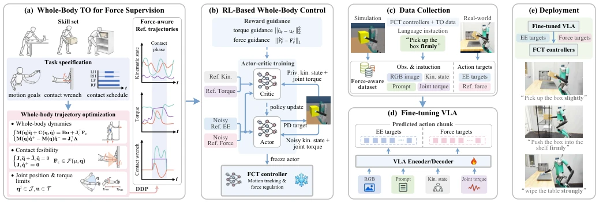
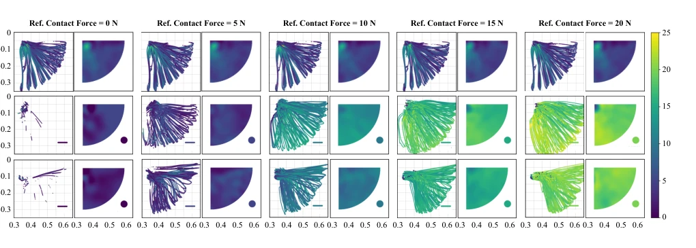
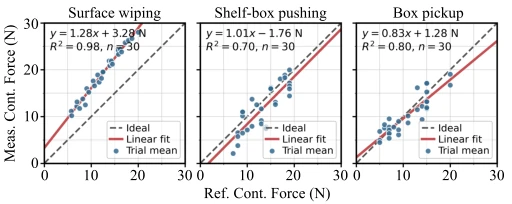
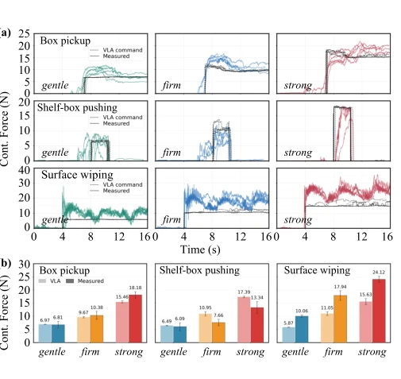
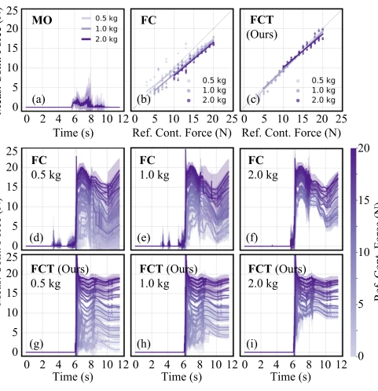
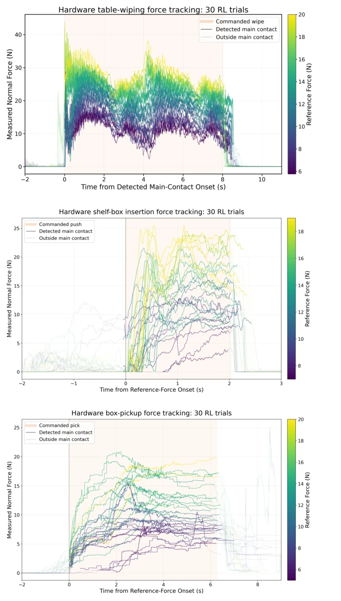
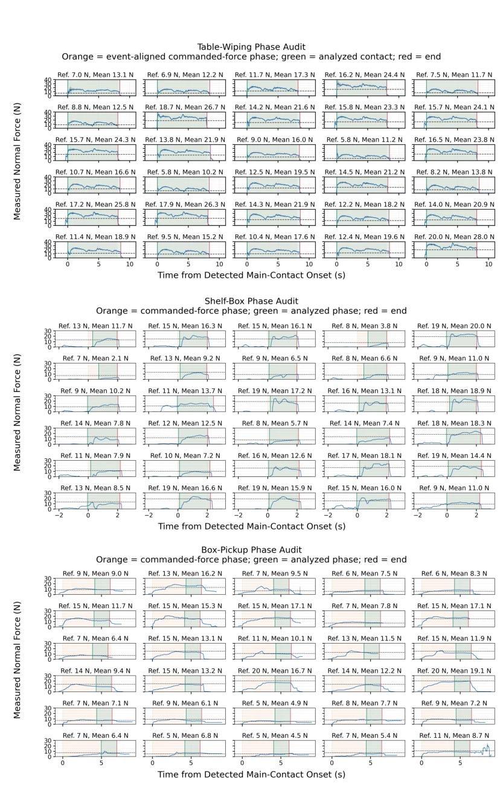
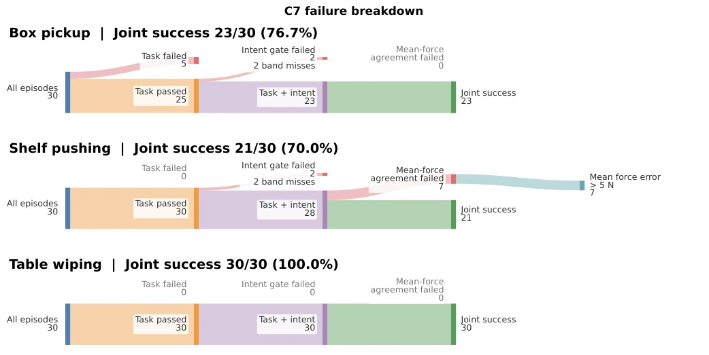
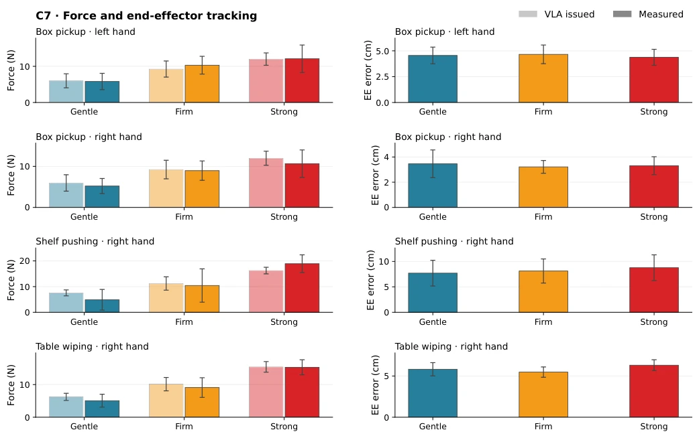

整体采用分层架构。上层是 VLA 策略，基于 GR00T-N1.7 [7] 微调，输入语言、视觉、状态和关节力矩历史，输出末端位姿和接触力参考序列。下层是 FCT 控制器（Force-conditioned control with torque supervision），基于 RL 训练，负责跟踪 VLA 的指令。关键创新在于数据闭环：先用 Whole-body TO 生成符合动力学和接触约束的运动、力矩和力轨迹 [37]，训练 FCT 控制器；再用训练好的控制器在仿真中 rollout 收集多模态数据（视觉、语言、力、力矩），用于 VLA 微调。力矩监督仅在训练时作为 privileged information 提供，部署时仅依赖 VLA 预测的力参考。VLA 部分还引入了专用力矩编码器及未来力矩预测辅助任务，增强对物理交互的理解。
—

Fig. 2. Overview of Opt2VLA. (a) Whole-body TO generates physically consistent motion, joint torque, and contact force trajectories under full-body dynamics and contact constraints. (b) Force-conditioned controller with torque supervision (FCT) is trained to track geometric motion goals (i.e., end-effector 3D target positions) while regulating interaction force, using privileged torque supervision only during training. (c) Large-scale simulation rollouts, together with a smaller set of real-world executions, are used to collect multimodal data including vision, language prompts, robot kinematic state, measured joint torques, end effector targets, and target-force labels. (d) A pretrained vision–language–action model is then fine-tuned to predict motion goals and contact-force references fr
Fig. 1. Opt2VLA enables autonomous, contact-rich whole-body humanoid manipulation with language-specified force levels. (a) box pickup, (b) shelf-box pushing against a designated shelf wall, and (c) surface wiping. Snapshots show the task progression. Plots compare VLA-issued force commands (dashed) and measured contact forces (solid) for selected hardware trials under gentle, firm, and strong force prompts. Opt2VLA jointly predicts motion and contact-force commands, enabling language-conditioned force modulation during autonomous whole-body manipulation.

Fig. 3. Contact force distributions for the surface wiping task under different target forces. Each subplot shows scattered measured contact forces (left) across trials at global end-effector (x, y) positions, along with a Gaussian fit (right) summarizing the resulting distribution. Results are aggregated over 10 × 3 trials with varying motion directions and table heights. Axes indicate position in meters, and color encodes normal contact force in newtons. FC and FCT produce force levels that vary with the target, whereas MO produces similar forces across target conditions. FCT achieves lower average force-tracking error than FC, as shown in Table II.

Fig. 6. Hardware force tracking of Opt2VLA’s FCT controller. (a) surface wiping, (b) shelf-box pushing, and (c) box pickup. Markers show per-trial mean, baseline-corrected force during steady contact; dashed lines indicate ideal tracking and solid lines show least-squares fits.

Fig. 7. End-to-end Opt2VLA force modulation on hardware. (a) VLA commands (dashed) and measured forces (solid). (b) Mean commanded and measured forces over the task-specific evaluation phase. Results include five trials per task and prompt.
其他图片Other Figures

Fig. 5. Force realization in the box pickup task. (a) Measured grasp force trajectories over time for MO under different object weights. (b–c) Realized versus commanded grasp force for FC and FCT across object weights; points denote average lift-and-hold forces with linear fits per weight. (d–f) FC grasp force trajectories over time for different object weights and commanded force levels. (g–i) Corresponding force trajectories for FCT. The reference-force ranges are 3–20 N, 5–20 N, and 10–20 N for the 0.5 kg, 1.0 kg, and 2.0 kg boxes, respectively, with 10 trials per weight–force condition.

Fig. 8. Hardware force trajectories across all trials. Baseline-corrected normal-force trajectories are shown for 30 trials per task. Trajectory color indicates the reference force. Opaque segments denote the sustained-contact interval used for analysis, faded segments show measurements outside main contact, and orange shading indicates the commanded-force phase. Differences in trace smoothness reflect the sensing modalities used across tasks.

Fig. 9. Contact-phase detection for the hardware trials. Each subplot presents one trial. Gray curves show the unfiltered, baseline-corrected normal force; blue curves show the filtered signal used only for phase-boundary detection, and dashed black lines indicate the reference force. Orange and green shading shows the commanded-force phase and the retained analysis interval, respectively. The green and red vertical lines indicate the beginning and end of the analyzed interval.

Fig. 10. C7 failure breakdown. Each task includes 30 episodes, partitioned by the first unmet criterion. Joint success requires the task gate and both episode-level force gates.

Fig. 11. C7 tracking diagnostics. Issued and measured force (left) and end-effector position error (right). Bars show means of episode means; whiskers show one sample standard deviation across ten scenes per prompt. All command-active intervals are included, regardless of task success or measured contact.